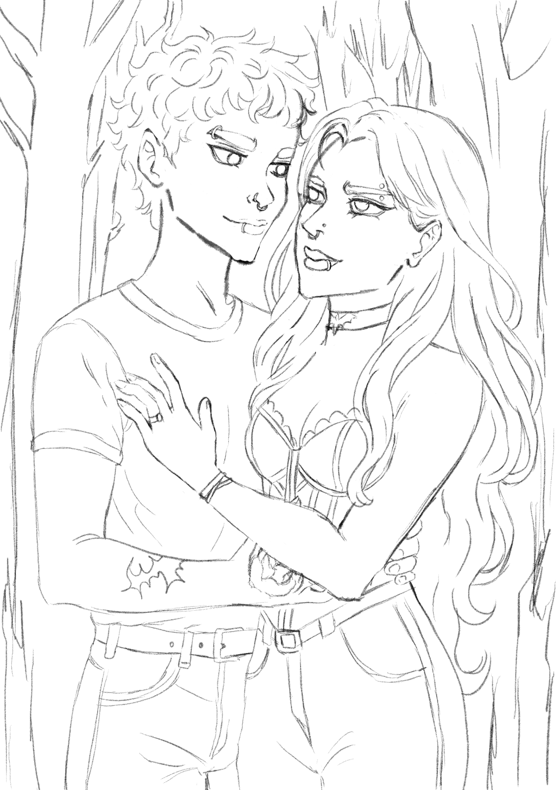

Ilustração · escrita · desejo
Entre o belo
e o inquietante.
Uma galeria íntima de personagens, sombras e histórias que não permanecem quietas por dentro.
Entrar na galeria ↘
Obras selecionadas
Corpos, personagens
e outras assombrações.
Por trás da imagem
O gesto antes
da forma.


Estudos tradicionaisO papel como lugar de observação: rostos, expressões e pequenos gestos antes de chegarem ao digital.

“Antes da beleza, existe o impulso. Antes da cor, o corpo já sabe o que quer dizer.”
Desafio de desenho · 12 dias
Construir um corpo.
Encontrar um personagem.
Uma série de estudos para exercitar anatomia, poses, expressões e adaptação de estilos. Cada prancha registra a observação da referência e as decisões tomadas no traço — do desenho estrutural à personalidade.

Escrita autoral · fantasia sombria · bilíngue
Seu Lado
Mais Escuro
Entre sombras vivas e uma floresta que respira memórias, Nyx desperta em um mundo que reflete tudo o que ela teme — e tudo o que ela ama. Separada de Alma, ela precisa atravessar um território criado a partir de suas próprias dores, traumas e desejos mais profundos.
— Eu sou o que você carrega — ela disse, inclinando a cabeça como se tivesse pena de mim. — Eu sempre estive aqui. Você só se recusou a me ver.
Eu levantei lentamente, ignorando a ardência das minhas mãos machucadas.
— Eu não tenho medo de você.
Um sorriso brotou em seus lábios escuros.
— Não tem? Pois deveria. Afinal… eu sei toda dúvida que você sussurrou para si mesma no escuro.
 SELF / PORTRAIT
SELF / PORTRAITVIOLET HOUR
Eu sou Nammy
Arte para o que
vive nas margens.
Artista lésbica e escritora interessada nas tensões entre intimidade, desejo, identidade e estranheza. Minha produção transita entre a ilustração digital, o desenho e a escrita autoral, explorando o espaço entre o delicado e o inquietante.
Este portfólio está em construção — como toda identidade viva deve estar.